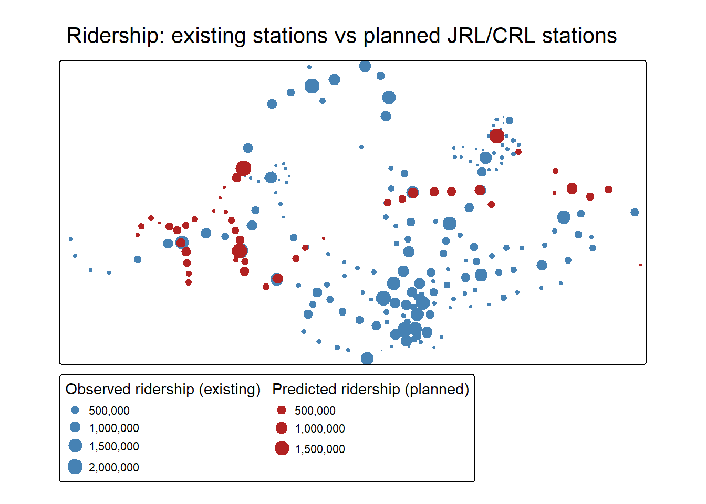
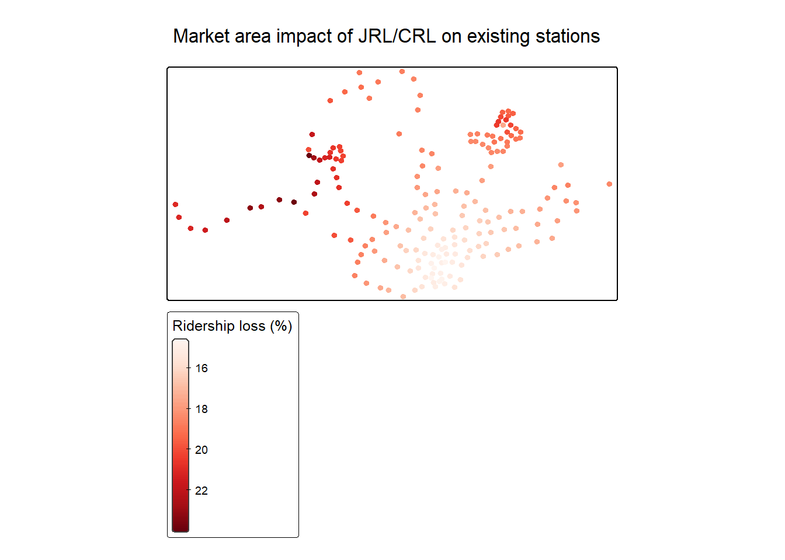

pacman::p_load(sf, tidyverse, tmap, httr)Take-home Exercise 3: Spatial Interaction Model for MRT Station Ridership
Calibrating a Huff model for existing and planned (JRL/CRL) MRT stations in Singapore
1 Overview
This exercise calibrates a probabilistic spatial interaction model for station-level MRT ridership in Singapore. The fitted model is then used to predict ridership at two planned lines, the Jurong Region Line (JRL) and the Cross Island Line (CRL), and to assess how their stations reshape the market areas of existing stations.
Methodology choices made up front:
| Choice | Decision |
|---|---|
| Model | Huff model |
| Attraction variable | HDB building footprint area (proxy for unit count; the HDB dataset has no unit-count field) + bus stop count nearby |
| Distance | Straight-line (Euclidean) |
| Ridership time window | Single month |
| Local market potential (origin side) | Nearby HDB footprint area, summed |
| Geographic scope | All existing stations + JRL + CRL planned stations |
| Validation | R² / RMSE against observed ridership |
| CRS | SVY21 / EPSG:3414 |
2 Getting Started
2.1 Data sources
| Dataset | Type | Source | Notes |
|---|---|---|---|
| Existing MRT/LRT station locations | Geospatial (point) | LTA DataMall | RapidTransitSystemStation.shp |
| Bus stop locations | Geospatial (point) | LTA DataMall | BusStop.shp |
| Future station coordinates (JRL/CRL) | Aspatial (lat/lon columns) | singapore_train_station_coordinates | filter station_code prefix: JRL = JS/JE/JW, CRL = CR/CP |
| HDB existing building footprints | Geospatial (polygon) | data.gov.sg | no unit-count field, using SHAPE.AREA as a size proxy |
| Passenger volume by O-D (train) | Aspatial (CSV) | LTA DataMall dynamic API | not yet downloaded; see PassengerVolumeByOriginDestination endpoint |
list.files("data/geospatial") [1] "BusStop.cpg" "BusStop.dbf"
[3] "BusStop.prj" "BusStop.shp"
[5] "BusStop.shx" "HDBExistingBuilding.geojson"
[7] "RapidTransitSystemStation.cpg" "RapidTransitSystemStation.dbf"
[9] "RapidTransitSystemStation.lyr" "RapidTransitSystemStation.prj"
[11] "RapidTransitSystemStation.sbn" "RapidTransitSystemStation.sbx"
[13] "RapidTransitSystemStation.shp" "RapidTransitSystemStation.shx"list.files("data/aspatial")[1] "future_stations.csv" "od_train_raw.zip"
[3] "operational_and_future_stations.csv" "operational_stations.csv"
[5] "origin_destination_train_202609.csv"2.2 Importing existing stations and bus stops
mrt <- st_read("data/geospatial/RapidTransitSystemStation.shp", quiet = TRUE) |>
st_transform(3414)
bus_stops <- st_read("data/geospatial/BusStop.shp", quiet = TRUE) |>
st_transform(3414)2.3 Importing future (JRL/CRL) station coordinates
future_raw <- read_csv("data/aspatial/operational_and_future_stations.csv", show_col_types = FALSE)
jrl_crl <- future_raw |>
filter(str_detect(station_code, "^(JS|JE|JW|CR|CP)"))2.4 Importing HDB building footprints
hdb <- st_read("data/geospatial/HDBExistingBuilding.geojson", quiet = TRUE) |>
st_transform(3414)2.5 Passenger volume by O-D
The API key is stored in .Renviron in this folder, which is git-ignored and never committed; it is read with Sys.getenv() and never hardcoded in this file.
library(httr)
request_date <- format(Sys.Date() - 60, "%Y%m")
res <- GET(
"https://datamall2.mytransport.sg/ltaodataservice/PV/ODTrain",
add_headers(AccountKey = Sys.getenv("LTA_API_KEY"), accept = "application/json"),
query = list(Date = request_date)
)
link <- content(res, as = "parsed")$value[[1]]$Link
download.file(link, destfile = "data/aspatial/od_train_raw.zip", mode = "wb")
unzip("data/aspatial/od_train_raw.zip", exdir = "data/aspatial")od_train <- read_csv("data/aspatial/origin_destination_train_202609.csv", show_col_types = FALSE)
od_summary <- od_train |>
group_by(ORIGIN_PT_CODE, DESTINATION_PT_CODE) |>
summarise(total_trips = sum(TOTAL_TRIPS), .groups = "drop")
nrow(od_summary)[1] 320482.5.1 Resolving station codes
Interchange stations use compound codes joined by / (e.g. EW12/DT14), which do not match the shapefile’s one-code-per-line format. The shapefile also stores some interchanges as separate points per line and omits a few major stations entirely; coordinates for those come from operational_stations.csv. Points within 200m are merged into a single physical station. A small number of resulting groups required manual correction, verified against the compound codes that actually appear in the O-D data.
pacman::p_load(igraph)
mrt_clean <- mrt |> filter(str_detect(STN_NAM, "[0-9]"))
operational <- read_csv("data/aspatial/operational_stations.csv", show_col_types = FALSE)
missing_codes <- c("DT16", "EW13", "EW14", "EW24", "NS1", "NS25", "NS26", "TE11")
supplement <- operational |>
filter(station_code %in% missing_codes) |>
rename(STN_NAM = station_code) |>
st_as_sf(coords = c("lon", "lat"), crs = 4326) |>
st_transform(crs = st_crs(mrt)) |>
select(STN_NAM, geometry)
mrt2 <- bind_rows(mrt_clean |> select(STN_NAM, geometry), supplement)
nb <- st_is_within_distance(mrt2, dist = 200)
edges <- as.data.frame(do.call(rbind, lapply(seq_along(nb), function(i) cbind(i, nb[[i]]))))
names(edges) <- c("from", "to")
edges <- edges[edges$from != edges$to, ]
g <- graph_from_data_frame(edges, vertices = data.frame(id = seq_len(nrow(mrt2))))
mrt2$station_group <- components(g)$membership
max_group <- max(mrt2$station_group)
mrt2 <- mrt2 |>
mutate(station_group = case_when(
STN_NAM == "CC3" ~ max_group + 1,
STN_NAM == "NE5" ~ max_group + 2,
TRUE ~ station_group
))
ne4_group <- unique(mrt2$station_group[mrt2$STN_NAM == "NE4"])
mrt2$station_group[mrt2$STN_NAM == "DT19"] <- ne4_group
station_lookup <- mrt2 |>
st_drop_geometry() |>
group_by(station_group) |>
summarise(canonical_code = paste(sort(unique(STN_NAM)), collapse = "/"), .groups = "drop")
stations <- mrt2 |>
group_by(station_group) |>
summarise(geometry = st_union(geometry), .groups = "drop") |>
st_centroid() |>
left_join(station_lookup, by = "station_group")
code_to_group <- mrt2 |>
st_drop_geometry() |>
select(STN_NAM, station_group) |>
distinct()
cc34_group <- code_to_group$station_group[code_to_group$STN_NAM == "DT16"]
code_to_group <- bind_rows(code_to_group, tibble(STN_NAM = "CC34", station_group = cc34_group))
map_to_group <- function(code) {
parts <- str_split(code, "/")[[1]]
groups <- unique(na.omit(code_to_group$station_group[match(parts, code_to_group$STN_NAM)]))
if (length(groups) == 1) groups else NA_integer_
}
nrow(stations)[1] 1852.5.2 Attraction variables and distances
hdb <- hdb |> mutate(area_m2 = as.numeric(st_area(geometry)))
buffer_dist <- 400
stations_buf <- st_buffer(stations, buffer_dist)
stations$bus_count <- lengths(st_intersects(stations_buf, bus_stops))
stations$hdb_area <- sapply(st_intersects(stations_buf, hdb), function(idx) sum(hdb$area_m2[idx]))
stations |> st_drop_geometry() |> select(canonical_code, bus_count, hdb_area) |> arrange(desc(hdb_area)) |> head(10)# A tibble: 10 × 3
canonical_code bus_count hdb_area
<chr> <int> <dbl>
1 PE5 11 180102.
2 NE17 9 173343.
3 SE3 14 164571.
4 SE5 12 154298.
5 PW7 15 148682.
6 NS10 12 143613.
7 PE6 10 142438.
8 PE1 14 142394.
9 PW6 14 141020.
10 PE2 9 137493.dist_matrix <- st_distance(stations, stations) |> as.numeric() |> matrix(nrow = nrow(stations))
dist_long <- as_tibble(dist_matrix) |>
setNames(stations$station_group) |>
mutate(origin_group = stations$station_group) |>
pivot_longer(-origin_group, names_to = "dest_group", values_to = "distance_m") |>
mutate(dest_group = as.numeric(dest_group)) |>
filter(origin_group != dest_group)
nrow(dist_long)[1] 34040od_clean <- od_summary |>
mutate(
origin_group = map_dbl(ORIGIN_PT_CODE, map_to_group),
dest_group = map_dbl(DESTINATION_PT_CODE, map_to_group)
) |>
filter(!is.na(origin_group), !is.na(dest_group))
nrow(od_clean)[1] 320483 Part 1: Data Preparation
The O-D table, station attraction variables, and station-to-station distances are combined into a single table, one row per observed origin-destination pair. Each row carries observed trips, distance, destination attraction, origin attraction (local market potential), and the origin’s total outgoing trips, which later serves as an offset in calibration.
station_attr <- stations |> st_drop_geometry() |> select(station_group, canonical_code, bus_count, hdb_area)
interaction_df <- od_clean |>
select(origin_group, dest_group, total_trips) |>
left_join(dist_long, by = c("origin_group", "dest_group")) |>
left_join(station_attr, by = c("dest_group" = "station_group")) |>
rename(dest_code = canonical_code, dest_bus_count = bus_count, dest_hdb_area = hdb_area) |>
left_join(station_attr |> select(station_group, origin_code = canonical_code, origin_hdb_area = hdb_area), by = c("origin_group" = "station_group"))
origin_totals <- interaction_df |>
group_by(origin_group) |>
summarise(O_i = sum(total_trips), .groups = "drop")
interaction_df <- interaction_df |>
left_join(origin_totals, by = "origin_group")
nrow(interaction_df)[1] 32048summary(interaction_df) origin_group dest_group total_trips distance_m
Min. : 1.00 Min. : 1.0 Min. : 1 Min. : 319.1
1st Qu.: 47.00 1st Qu.: 47.0 1st Qu.: 84 1st Qu.: 6291.5
Median : 93.00 Median : 93.0 Median : 442 Median :10300.9
Mean : 92.62 Mean : 92.6 Mean : 2680 Mean :10826.1
3rd Qu.:138.00 3rd Qu.:138.0 3rd Qu.: 1796 3rd Qu.:14664.8
Max. :185.00 Max. :185.0 Max. :191047 Max. :39168.6
NAs :6
dest_code dest_bus_count dest_hdb_area origin_code
Length :32048 Min. : 2.000 Min. : 0 Length :32048
N.unique : 182 1st Qu.: 7.000 1st Qu.: 0 N.unique : 182
N.blank : 0 Median : 9.000 Median : 35822 N.blank : 0
Min.nchar: 3 Mean : 9.353 Mean : 44397 Min.nchar: 3
Max.nchar: 21 3rd Qu.:12.000 3rd Qu.: 74950 Max.nchar: 21
Max. :20.000 Max. :180102
origin_hdb_area O_i
Min. : 0 Min. : 4681
1st Qu.: 0 1st Qu.: 143150
Median : 35822 Median : 302974
Mean : 44437 Mean : 497241
3rd Qu.: 74950 3rd Qu.: 724601
Max. :180102 Max. :2042147
4 Part 2: Huff Model Calibration
The Huff model’s destination choice probability is attraction divided by distance, normalized across all competing destinations from the same origin. That normalization term is origin-specific and is captured here as an origin fixed effect in a Poisson regression, the standard approach for calibrating a production-constrained (Huff-type) spatial interaction model. The coefficients of interest are the destination attraction variables and the distance-decay term.
model_df <- interaction_df |> filter(!is.na(distance_m))
huff_model <- glm(
total_trips ~ factor(origin_group) + log(dest_bus_count + 1) + log(dest_hdb_area + 1) + log(distance_m),
family = quasipoisson(),
data = model_df
)
coef_table <- summary(huff_model)$coefficients
coef_table[c("log(dest_bus_count + 1)", "log(dest_hdb_area + 1)", "log(distance_m)"), ] Estimate Std. Error t value Pr(>|t|)
log(dest_bus_count + 1) 0.766508400 0.027723397 27.648430 2.691833e-166
log(dest_hdb_area + 1) -0.008271515 0.002183759 -3.787741 1.523021e-04
log(distance_m) -0.728042508 0.010925568 -66.636582 0.000000e+00model_df$predicted_trips <- predict(huff_model, type = "response")
rmse <- sqrt(mean((model_df$total_trips - model_df$predicted_trips)^2))
r2 <- cor(model_df$total_trips, model_df$predicted_trips)^2
rmse[1] 6861.097r2[1] 0.21400915 Part 3: Prediction at Existing + Planned Stations
Planned (JRL/CRL) stations have no historical ridership, so an origin-side fixed effect cannot be estimated for them as it was for existing stations. Each planned station is instead treated as a new competing destination. The calibrated attraction and distance-decay coefficients are applied to every existing station’s already-estimated origin scale factor, and the resulting predicted trips are summed across all origins to obtain predicted inbound ridership at the new station. This approximates alighting volume only; boarding volume is assumed roughly symmetric over a full day.
valid_origins <- sort(unique(model_df$origin_group))
stations_valid <- stations |> filter(station_group %in% valid_origins)
origin_effects <- tibble(
origin_group = stations_valid$station_group,
dest_bus_count = 0,
dest_hdb_area = 0,
distance_m = 1
)
origin_effects$scale_i <- predict(huff_model, newdata = origin_effects, type = "response")
beta_bus <- coef(huff_model)["log(dest_bus_count + 1)"]
beta_hdb <- coef(huff_model)["log(dest_hdb_area + 1)"]
beta_dist <- coef(huff_model)["log(distance_m)"]5.0.1 Validation at the station level
station_validation <- model_df |>
group_by(dest_group, dest_code) |>
summarise(actual = sum(total_trips), predicted = sum(predicted_trips), .groups = "drop") |>
arrange(desc(actual))
cor(station_validation$actual, station_validation$predicted)^2[1] 0.07960525head(station_validation, 10)# A tibble: 10 × 4
dest_group dest_code actual predicted
<dbl> <chr> <dbl> <dbl>
1 178 EW24/EW24 / NS1/NS1 2068428 461577.
2 24 NS22 1918007 631100.
3 89 NS9/TE2 1893008 413848.
4 108 DT18/DT19/NE4 1781888 1415364.
5 143 CC13/NE12 1692045 668113.
6 176 DT14/EW12 1624821 1004887.
7 10 DT32/EW2 1618419 495558.
8 148 DT11/NS21 1613731 643115.
9 87 NS13 1584832 451680.
10 93 EW27 1578470 348919.5.0.2 Predicting ridership at planned (JRL/CRL) stations
jrl_crl_sf <- jrl_crl |>
st_as_sf(coords = c("lon", "lat"), crs = 4326) |>
st_transform(crs = st_crs(stations)) |>
select(station_code, station_name, geometry)
jrl_crl_buf <- st_buffer(jrl_crl_sf, buffer_dist)
jrl_crl_sf$bus_count <- lengths(st_intersects(jrl_crl_buf, bus_stops))
jrl_crl_sf$hdb_area <- sapply(st_intersects(jrl_crl_buf, hdb), function(idx) sum(hdb$area_m2[idx]))
dist_to_new <- st_distance(stations_valid, jrl_crl_sf) |> as.numeric() |> matrix(nrow = nrow(stations_valid))
attract_new <- (jrl_crl_sf$bus_count + 1)^beta_bus * (jrl_crl_sf$hdb_area + 1)^beta_hdb
predicted_matrix <- sweep(dist_to_new^beta_dist, 2, attract_new, "*")
predicted_matrix <- sweep(predicted_matrix, 1, origin_effects$scale_i, "*")
jrl_crl_sf$predicted_ridership <- colSums(predicted_matrix)
jrl_crl_sf |>
st_drop_geometry() |>
select(station_code, station_name, bus_count, hdb_area, predicted_ridership) |>
arrange(desc(predicted_ridership))# A tibble: 48 × 5
station_code station_name bus_count hdb_area predicted_ridership
<chr> <chr> <int> <dbl> <dbl>
1 JS1 Choa Chu Kang 12 46523. 1651523.
2 CP4 Punggol 9 175906. 1534140.
3 JE5 Jurong East 12 15073. 1531722.
4 CP1 Pasir Ris 19 51908. 810447.
5 CR5 Pasir Ris 19 51908. 810447.
6 CR17 Clementi 13 96153. 747809.
7 CR11 Ang Mo Kio 11 87306. 695125.
8 CR8 Hougang 12 61597. 688103.
9 JS8 Boon Lay 9 64626. 603404.
10 JS2 Choa Chu Kang West 16 117614. 594906.
# ℹ 38 more rows5.0.3 Visualizing predicted ridership
tmap_mode("plot")
existing_map <- stations |>
left_join(station_validation |> st_drop_geometry() |> select(dest_group, actual), by = c("station_group" = "dest_group")) |>
mutate(actual = replace_na(actual, 0))
map_ridership <- tm_shape(existing_map) +
tm_dots(size = "actual", fill = "steelblue", size.legend = tm_legend(title = "Observed ridership (existing)")) +
tm_shape(jrl_crl_sf) +
tm_dots(size = "predicted_ridership", fill = "firebrick", size.legend = tm_legend(title = "Predicted ridership (planned)")) +
tm_title("Ridership: existing stations vs planned JRL/CRL stations")
map_ridership
dir.create("es_images", showWarnings = FALSE)
tmap_save(map_ridership, "es_images/fig-ridership-comparison.png", width = 1600, height = 1000, dpi = 150)6 Part 4: Market Area Impact Assessment
Holding each origin’s total trip-making constant, the destination choice set is expanded from existing stations alone to existing plus planned stations. Each existing station’s predicted ridership shifts as part of its market share is captured by nearby planned stations. This reallocation uses the calibrated attraction and distance-decay terms directly, rather than the fixed-effect shortcut applied in Part 3.
attract_existing <- (stations$bus_count + 1)^beta_bus * (stations$hdb_area + 1)^beta_hdb
origin_O <- stations_valid |>
st_drop_geometry() |>
select(station_group) |>
left_join(interaction_df |> distinct(origin_group, O_i), by = c("station_group" = "origin_group"))
dist_existing <- st_distance(stations_valid, stations) |> as.numeric() |> matrix(nrow = nrow(stations_valid))
weight_existing <- sweep(dist_existing^beta_dist, 2, attract_existing, "*")
weight_existing[outer(stations_valid$station_group, stations$station_group, "==")] <- 0
weight_new <- sweep(dist_to_new^beta_dist, 2, attract_new, "*")
denom_before <- rowSums(weight_existing)
denom_after <- denom_before + rowSums(weight_new)
trips_before <- sweep(weight_existing, 1, origin_O$O_i / denom_before, "*")
trips_after <- sweep(weight_existing, 1, origin_O$O_i / denom_after, "*")
market_area <- tibble(
station_group = stations$station_group,
canonical_code = stations$canonical_code,
ridership_before = colSums(trips_before),
ridership_after = colSums(trips_after)
) |>
mutate(pct_change = (ridership_after - ridership_before) / ridership_before * 100)
market_area |> arrange(pct_change) |> head(10)# A tibble: 10 × 5
station_group canonical_code ridership_before ridership_after pct_change
<dbl> <chr> <dbl> <dbl> <dbl>
1 169 BP2 602148. 457837. -24.0
2 90 EW25 477346. 363649. -23.8
3 162 EW28 597350. 458081. -23.3
4 88 EW26 375506. 288163. -23.3
5 145 BP3 509397. 393391. -22.8
6 170 NS2 503768. 390422. -22.5
7 93 EW27 351528. 272778. -22.4
8 14 EW29 369518. 287826. -22.1
9 13 NS3 347834. 271384. -22.0
10 157 BP4 488909. 382106. -21.8market_area |> arrange(pct_change) |> tail(10)# A tibble: 10 × 5
station_group canonical_code ridership_before ridership_after pct_change
<dbl> <chr> <dbl> <dbl> <dbl>
1 151 DT13 692594. 588481. -15.0
2 92 EW13/EW13 / NS25/N… 844415. 717533. -15.0
3 69 EW14/EW14 / NS26/N… 647344. 550310. -15.0
4 138 DT20 691236. 587875. -15.0
5 181 DT17 598078. 509164. -14.9
6 183 TE19 545724. 464595. -14.9
7 36 CC2/DT21 1067626. 908970. -14.9
8 185 NE5 838973. 715134. -14.8
9 137 TE18 773675. 659833. -14.7
10 184 CC3 754723. 643818. -14.7The largest ridership losses occur at existing stations geographically closest to the new JRL/CRL alignment. Stations far from both new lines show negligible change.
market_sf <- stations |>
left_join(market_area |> st_drop_geometry() |> select(station_group, pct_change), by = "station_group") |>
mutate(impact_magnitude = abs(pct_change))
map_impact <- tm_shape(market_sf) +
tm_dots(fill = "impact_magnitude", fill.scale = tm_scale_continuous(values = "brewer.reds"), size = 0.3, fill.legend = tm_legend(title = "Ridership loss (%)")) +
tm_title("Market area impact of JRL/CRL on existing stations")
map_impact
tmap_save(map_impact, "es_images/fig-market-impact.png", width = 1600, height = 1000, dpi = 150)7 Summary
This analysis calibrated a Huff-type spatial interaction model for MRT ridership in Singapore using one month of LTA passenger volume data, two station attraction variables (nearby bus stop count and HDB building footprint area), and Euclidean distance.
Destination bus stop count was a strong positive predictor, and distance showed the expected decay, matching Huff’s theory. HDB footprint area had a negligible effect: the highest-volume destinations are major interchange and CBD stations, which attract high ridership despite limited residential density nearby. Neither attraction variable captures interchange status or the number of lines served; this omission likely explains part of the underprediction at hub stations. The calibrated model explained roughly 21% of pair-level variance (R-squared = 0.214) and underestimated ridership at the busiest interchanges. Euclidean distance also understates travel distance for stations separated by physical barriers such as rivers.
Applying the calibrated attraction and distance-decay terms to the planned JRL and CRL stations, predicted ridership is highest at stations near existing major interchanges, including Choa Chu Kang, Punggol, and Jurong East. Distance decay accounts for this: these stations draw riders away from the nearest large hub.
Treating the planned stations as new competing destinations and holding total trip-making constant, every existing station’s predicted market area shrinks modestly, by 15 to 24 percent. The largest losses fall on stations physically closest to the new lines, particularly Bukit Panjang LRT and the western stretch of the East-West Line. Central interchanges such as City Hall, Raffles Place, and Dhoby Ghaut are barely affected. This matches the geographic footprint of the two new lines: JRL in the west, CRL in the north and northeast.
8 Data sources
- Land Transport Authority (LTA) DataMall: train station locations, bus stop locations, passenger volume by origin-destination (train)
- data.gov.sg: HDB Existing Building
- singapore_train_station_coordinates: future station coordinates (JRL/CRL)
9 References
R packages
- Pebesma, E. (2018). Simple Features for R. sf. https://CRAN.R-project.org/package=sf
- Tennekes, M. (2018). tmap: Thematic Maps in R. Journal of Statistical Software. https://CRAN.R-project.org/package=tmap
- Wickham, H., et al. (2019). Welcome to the tidyverse. Journal of Open Source Software.